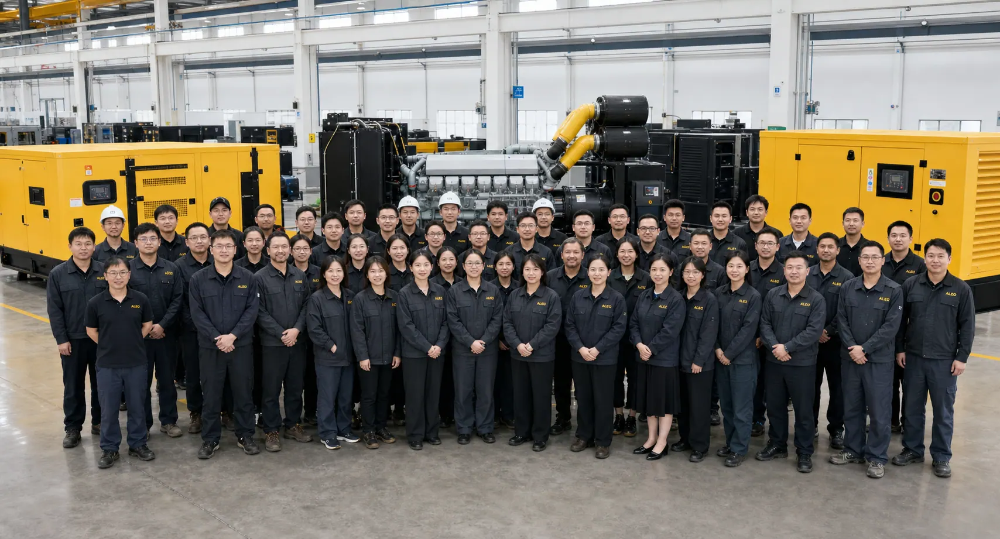

Topic Planning
| Blog Title | Generator Sets for Middle East and Africa Projects: Application, Delivery and Supplier Selection Guide |
|---|---|
| Target Keywords | generator supplier UAE, generator supplier Saudi Arabia, industrial generator Nigeria, generator set South Africa, EPC power solution |
| Search Intent | Regional commercial investigation. Buyers are evaluating suppliers for Middle East and Africa generator projects. |
| Why This Works | This topic supports GEO pages and captures buyers searching by region, application and supplier reliability. It also gives AI systems a clear entity-market-product relationship. |
Introduction
For UAE, Saudi Arabia, Nigeria, South Africa and nearby markets, generator set sourcing is usually connected to real operating pressure. Factories need backup power, contractors need site power, EPC teams need packaged equipment, and dealers need products that match local demand.
This guide explains how buyers should evaluate generator set applications, delivery preparation and supplier capability when sourcing from an overseas manufacturer.
The Direct Answer
For Middle East and Africa projects, buyers should choose generator sets based on application, climate, fuel availability, voltage and frequency, service access, delivery route and supplier export experience. A good supplier should help confirm configuration before production and provide practical shipment inspection support.
Application Comes Before Product Name
A generator set for a factory is different from one for a construction site or remote industrial facility. Factory backup power may need stable automatic transfer and low downtime. Construction sites may prioritize mobility, fast delivery and rugged operation. EPC projects may need documentation, packaging, interface details and coordinated delivery timing.
When sending an inquiry, buyers should describe what the generator will power. This helps the supplier consider load type, running hours, enclosure, cooling, fuel system and control requirements.
Climate and Site Conditions Matter
High ambient temperature can affect generator performance and cooling design. Dusty or remote environments may influence filtration, enclosure, maintenance planning and spare parts. Altitude can also affect engine output. These conditions should be discussed before order confirmation.
For outdoor installations, buyers should consider canopy design, rain protection, ventilation, noise limitations and maintenance access. A good supplier will ask questions instead of quoting blindly.

Tell us your country, application, power capacity and delivery timeline for regional project support.
Delivery and Shipment Inspection
Overseas generator projects require careful shipment preparation. The buyer should request photos before shipment, including product appearance, control panel, accessories, spare parts, packaging and loading. For large generator sets, packaging and lifting points should be planned carefully.
Shipment inspection is especially important for dealers and contractors who must answer to their own customers. Clear records reduce confusion after arrival and help the buyer verify that the delivered scope matches the order.
Supplier Selection for Regional Buyers
A supplier for Middle East and Africa projects should be able to communicate clearly about product scope, not only price. Buyers should look for source manufacturer positioning, OEM/ODM support, factory testing process, export packaging experience and willingness to clarify requirements.
For dealers, private label and documentation may matter. For EPC companies, project coordination and configuration accuracy may matter more. For industrial end users, reliability, maintenance access and spare parts are often priorities.
How To Prepare A Better Regional RFQ
A strong RFQ should include country, application, required power, fuel type, voltage, frequency, running mode, quantity, installation environment, delivery timeline and any local preferences. If the buyer has photos of the site or a technical specification, those should be shared early.
This information helps the supplier recommend whether a gas generator set, diesel generator set or customized solution is more suitable. It also allows the supplier to prepare a quotation that is easier to compare.
FAQ
What generator type is common for remote sites?
Diesel generator sets are common because fuel logistics can be flexible, but gas generator sets may work where stable gas supply exists. The site condition determines the best option.
What should Middle East buyers pay attention to?
Ambient temperature, ventilation, dust conditions, voltage and frequency, noise requirements and delivery preparation should be reviewed before production.
Can a supplier support OEM/ODM for regional dealers?
Yes, OEM/ODM support may include branding, enclosure color, packaging and configuration planning, but exact scope should be confirmed before ordering.
Conclusion
Generator set sourcing for Middle East and Africa projects should be treated as a project configuration process. Application, climate, fuel, delivery and service needs all affect the final solution.
A supplier that asks the right questions can help buyers reduce risk and prepare a more accurate quotation.
SEO Information
| SEO Title | Generator Sets for Middle East and Africa Projects | Supplier Guide |
|---|---|
| Meta Description | A practical guide for buyers sourcing generator sets for UAE, Saudi Arabia, Nigeria, South Africa and regional industrial projects, covering application, delivery and supplier checks. |
| URL Slug | generator-sets-middle-east-africa-projects |
Image Plan And AI Prompts
Hero image
Insert position: After introduction
Caption: Regional projects need generator sets matched to climate, fuel and application.
ALT: Industrial generator set for Middle East and Africa project
AI prompt: Photorealistic image of industrial generator sets prepared for export project, warm climate industrial site context, yellow black equipment, professional B2B style, no text.
Delivery image
Insert position: Delivery and Shipment Inspection section
Caption: Shipment inspection supports overseas project confidence.
ALT: Generator set export shipment inspection
AI prompt: Realistic photo of generator set being inspected before container loading, factory staff checking accessories and packaging, clean industrial environment, no readable text.
Application image
Insert position: Application Comes Before Product Name section
Caption: The application determines generator configuration and quote scope.
ALT: Generator set supplying power to remote industrial site
AI prompt: Photorealistic generator set at remote industrial project site, practical installation environment, realistic lighting, no logos, no text.
CTA And Inquiry Popup Plan
Mid-article CTA: After “Climate and Site Conditions Matter”: Send Your Country and Site Conditions.
Final CTA: At conclusion: Contact ALEO POWER for Middle East or Africa Generator Support.
Popup trigger: Scroll to 40% or exit intent on regional market pages.
Popup title: Sourcing Generator Sets For Your Region?
Popup copy: Tell us your country, application, power capacity and fuel type. We will help you prepare a practical quote.
Fields: Name, Email, Phone required; Company, Country, Product Requirement and Message optional.
Button: Send Regional Requirement